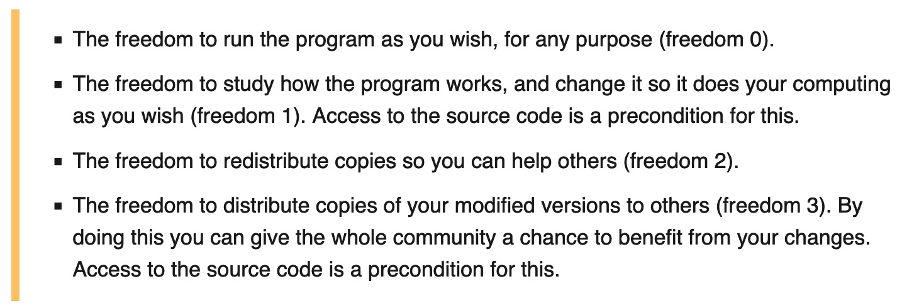

[1] 1002 R and Friends
2.1 R and Friends
In 1991, two professors in New Zealand began to develop R, a process which they documented in (Ihaka and Gentleman 1996). R is very similar to S; so similar, in fact, that it is frequently called a dialect of S. What is the difference between S and R? The creators of R describe it as having the syntax of S (meaning that most examples, including the following example, can be run in S or R) but the semantics of Scope (which is a programming language from the Lisp family).
Probably the key difference between the two languages is the lexical scoping. Whenever you use R (or most other programming languages), you have to have something called a frame. Frames include things like functions and named variables. Each function creates its own frame. The frame for the function f in the example below (from Ihaka and Gentleman (1996)) contains the named variable y and the named function g. The named function g, as a function, creates its own frame (in which to store variables and functions). There is also something called a global frame which, in the following example, includes an assignment of the value 123 to the name y and the assignment of some function to the name f.
show code for this result
- 1
-
the the beginning of the declaration of function
f(between lines 2 and 6) - 2
-
the declaration of function
g - 3
-
a function call for function
f(with the argumentxset to equal 10)
As you can see, in R, running the function f with 10 as an argument results in the function returning 100 (10 times 10). In S, this very same code would have resulted in function f returning the value 123. In S, when we define the function g, S uses the global frame as the basis for the function, including the assignment of the value 123 to y. R, by contrast, creates g with a locally-scoped frame, meaning that the frame for g includes the assignment of the value x * x to the variable y (assignments which are inherited from the parent frame). Thus, in S, the function g is evaluated as print(123), but the R function is evaluated as print(x * x) (the function f is responsible for substituting x to make print(10 * 10).
Unlike Scheme, but like S, R uses lazy evaluation. In essence, this means that R does not run your code unless it absolutely has to. I’ll use the example of Figure 2.1 to explain what this means. Lines 2 through 6 contain the declaration of function f (even though line 4 also contains the declaration of function g. When you run line 2, all of the lines down to line 6 (where the closing bracket, } is located) get stored in R’s memory next to the name f. However, R will not run the function f until you actually go to use it (i.e., until you make the function call in line 7). This is why we call R lazy, but what’s the big deal?
If you make a syntax error in your declaration of function f, R is going to have to tell you that you made a syntax error at some point. In a language that is not lazy, the language evaluates function f when you store it. Thus, a non-lazy language will send you a syntax error after you run the function declaration (i.e., after you run line 2, which also causes lines 3-6 to run). If Figure 2.1 were written in a non-lazy language, the syntax error would occur where the 1 annotation is. However, in R, the function is merely stored when you run lines 2-6. Function f does not actually run until you call it in line 7 (marked with a 3 in Figure 2.1). Laziness is a feature that R inherited from S, which is also lazy.
This is getting a bit technical. The two men who developed R are Ross Ihaka and Robert Gentleman. On a family tree posted on Ihaka’s personal website, he lists himself as the academic grandchild of John Tukey, then statistician at Bell Labs that popularized exploratory data analysis (the framework that created the need for S, which was also, if you’ll recall developed at Bell Labs).
Ihaka is a now retired statistician from the University of Auckland. Gentleman is a bioinformatician who currently works at Harvard and 23andMe. Allegedly, Ihaka and Gentleman developped R for use in teaching statistics. That was part of both of their jobs as professors, after all. However, this doesn’t seem very plausible (why would the professors write their own statistical programming languages rather than using a well-documented one which would seem to be better for pedagogy), nor have I seen any specific evidence for it. That being said, in the years 1993-94, R was stuck at the University of Auckland, being used by them, probably their peers, and less probably their students, but the software was not yet being distributed, as S or S-PLUS was.
In 1995, one of their colleagues convinced them to licence use of the software as free software under a GNU general public license.
2.1.1 Free Software
I just bolded the term free software; why? As it turns out, the term free software has a specific definition that extends far beyond the idea of “software that you don’t have to pay for.” So what is free software? Free software is characterized by the four freedoms (Foundation n.d.):

The idea of free software, and it’s formation in the four freedoms seen above, came to be popular in the mid-80’s after the Reagan government had made clear it’s stance (and the republican, and soon the democratic, party’s stance) on anti-trust enforcement. In the wake of the disruption to the computing (IBM) and telephone (AT&T) industries, the Reaganites declared that we were entering into an era of free, competitive trade while setting up a regulatory framework that would allow tech companies to consolidate power and market share ad infinitum, resulting in the current big 4(-ish): Apple, Alphabet (Google), Amazon, and Meta (and Microsoft, Nvidia, and potentially Tesla and like Netflix, depending on who you ask).
It is a good thing for us, then, that none of these companies own R, which the developers have promised will remain free software indefinitely.
2.1.2 Open Sourcing and Crowd Sourcing
These days, it feels like only a real purist will call R free software. The more en vogue term is “open source.” The Free Software Foundation would like you to treat the terms as separate however (see this article).
In reality, the labels “open source” and “free software” are mostly synonymous in that they refer to many of the same software. As Freedoms 1 and 3 make clear, software must be open source before it can be free. The free software folks’ biggest problem with “open source” is one of semantics, really. They claim that the “open source” movement argues too much about how free software is good for business and software development (i.e., because curious users can look for and find bugs). The free software people are not interested in these practical matters, focusing instead of the moral question of what sort of software is right and wrong. They correspondingly argue their case in the form of moral imperatives (the four freedoms).
I am less interested in these theoretical questions, and more interested in explaining to you what the implication of free or open software is bound to be (at least in the case of R): crowd-sourced development.
R itself provides you with basic statistical functionality. However, the vast majority of what is commonly called “R” is not actually part of the base distribution of R. Instead, most of the functionality is packaged within “packages,” which are you load into R with the library() function, as shown below:
── Attaching core tidyverse packages ──────────────────────── tidyverse 2.0.0 ──
✔ dplyr 1.1.4 ✔ readr 2.1.5
✔ forcats 1.0.0 ✔ stringr 1.5.1
✔ ggplot2 3.5.1 ✔ tibble 3.2.1
✔ lubridate 1.9.3 ✔ tidyr 1.3.1
✔ purrr 1.0.2
── Conflicts ────────────────────────────────────────── tidyverse_conflicts() ──
✖ dplyr::filter() masks stats::filter()
✖ dplyr::lag() masks stats::lag()
ℹ Use the conflicted package (<http://conflicted.r-lib.org/>) to force all conflicts to become errors